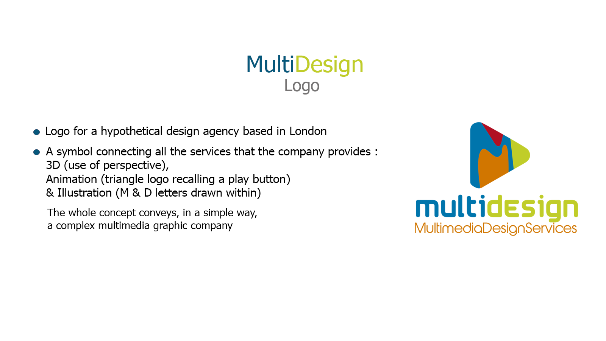
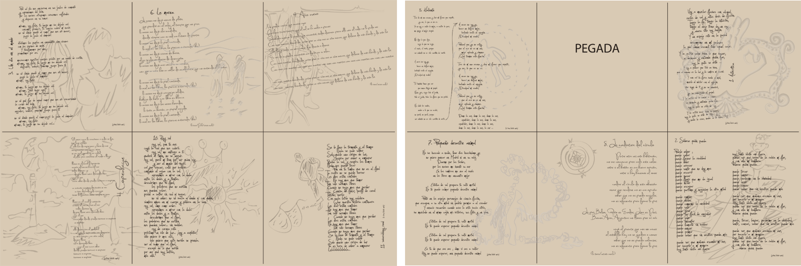
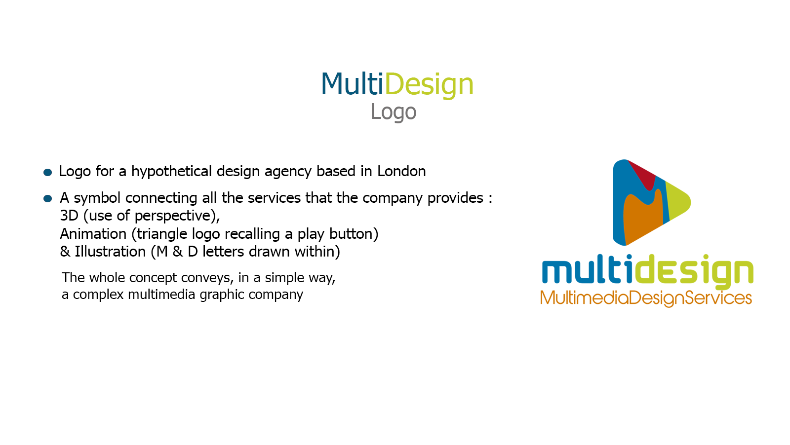
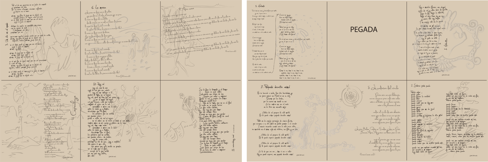

VETUSTA MORLA
Another day in the world

Another day in the world
 



In order to create the advertisement I found inspiration in some concepts so involved on graphic design, like are ideas and emotions.
I worked mainly with photography. In the first step I chose a picture of a baby, which evokes emotions and strengthens the concept of growing ideas.
Furthermore, the paper is the metaphore of sketches, usually used for brain storming. This is the place where you put your creativity, and those papers turned in to a bird are representing developing ideas.